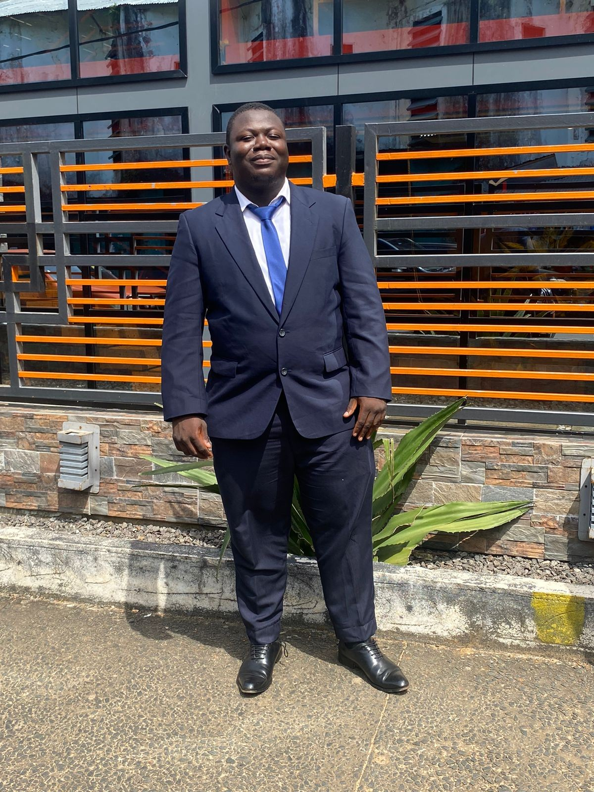

LEGAL LEADERSHIP
Legal oversight
Legal-related leadership and support for Utilitay. Specific responsibilities and public case studies can be added after review and approval.
DETAILS TO CONFIRMLIBERIA · LAW · TECHNOLOGY
Second-year law student. Technology entrepreneur. Partner at Utilitay.
Serving as Legal and Operations Head at Utilitay, with interests spanning legal analysis, responsible technology, criminal justice, and digital innovation.

Theotis Luke Sneh is a Liberian second-year law student and technology entrepreneur whose work connects legal and operational leadership with digital innovation.
He serves as a partner at Utilitay and as its Legal and Operations Head. His interests include legal research, criminal justice, human rights, business operations, and the development of practical technology solutions.
CURRENT ORGANIZATION
Partner · Legal and Operations Head
LEGAL LEADERSHIP
Legal-related leadership and support for Utilitay. Specific responsibilities and public case studies can be added after review and approval.
DETAILS TO CONFIRMOPERATIONS
Operations leadership at Utilitay. Project descriptions, scope of authority, and measurable outcomes will be added only when confirmed.
DETAILS TO CONFIRMUtilitay
Supports legal and operational leadership for a technology venture, connecting business operations, risk awareness, and practical digital solutions.
Grace Tech Liberia · Parker Paint, Liberia
Mentors employees, coordinates cross-functional workflows, improves internal communication, implements process and cost improvements, supports employee engagement, and oversees product and service launches.
SNS Liberia · Congo Town, Liberia
Worked with product managers on technical requirements, applied Agile methods, optimized application performance and system stability, and reduced downtime through monitoring and troubleshooting.
Experience descriptions are based on the information provided in my CV and professional profile.
Law studies · Second-year law student.
Bachelor of Arts in Criminal Justice. Academic focus included criminal justice systems, alternative dispute resolution, legal research and analysis, policy development, and advocacy.
Professional Diploma in Software Engineering, with focus on database management (SQL and MongoDB), software design and development, critical thinking, and problem-solving.
High School Certificate.
An Analysis of Alternative Dispute Resolution Mechanisms in Liberia: Challenges and Opportunities for Justice Reform. The project explored ADR practices in post-conflict Liberia and considered policy reforms to strengthen community access to justice.
LEGAL & POLICY
Legal research and analysis · Alternative dispute resolution · Policy development and advocacy · Justice-sector reform analysis.
LEADERSHIP
Strategic planning · Team leadership and mentoring · Project coordination · Workflow optimization · Communication and negotiation.
TECHNOLOGY
Software design and development · SQL and MongoDB · Agile development · System performance optimization · Data analysis and reporting.
PRODUCTIVITY
Microsoft Office · Google Workspace · Presentation and report writing · Teamwork, adaptability, and problem-solving.
Participant; developed a healthcare-improvement prototype. This experience reflects an interest in practical, user-focused technology for community needs.
Language: English — B2 level (independent user), as listed in the CV.
LEGAL RESEARCH · LIBERIA
FIRST-SEMESTER LEGAL RESEARCH
Explores Liberia’s common law foundations, case law on married women’s property and customary inheritance, statutory reforms, and the continuing gap between formal legal protections and lived experience.
DOCUMENTARY REVIEW · APA 7
A documentary assessment of ADR program development, access to justice, training activity, available outcome evidence, and remaining evaluation gaps.
MANUSCRIPT PREPARED FOR FURTHER SCHOLARLY REVIEWAcademic writing is presented for research and portfolio purposes. Manuscript status is identified for each item; publication here does not mean journal acceptance or peer review.
DIGITAL LITERARY COLLECTION · 2020–2022
Eight poems on African society, justice, equality, perseverance, grief, democracy, and hope—presented in a dedicated reading experience, revised in 2026.
PROFESSIONAL ENQUIRIES
For professional, academic, and technology-related enquiries, use the contact details below.
Only approved public professional contact details are displayed. A residential address and personal phone number from the résumé have been omitted.